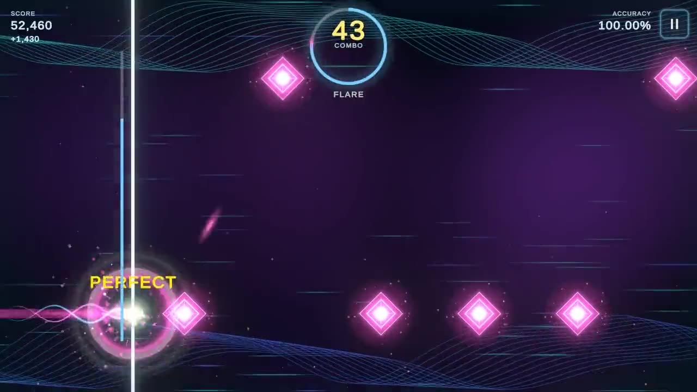

Flare
Hold W or S to change lanes, hit Space on the beat. That is the whole input surface — everything else is chart design.
What I changed, and why
I played it with the extra ideas on paper and every one of them made the hands busier without making the choice more interesting. The problem was never the number of inputs. So I cut instead of added, and put the depth into when you ignite rather than what you press.
Play it

Loads the full game here (about 35 MB). Best on a computer.How it plays
Notes stream along three lanes toward the judge line. You hold W or S to move between lanes and press Space to hit. A clean run builds combo, and combo charges the Flare meter.
Igniting Flare turns the screen gold and multiplies the score. Ignite again while it is still burning and the multiplier stacks, up to four times. So the real skill is reading the chart: knowing where the dense passages are, and saving the Flare for them.
Timing that stays legible
Pressing too early on a nearby note is a miss. Pressing into empty space costs nothing. The rule is the same on every difficulty, so the risk is always visible: you only lose by guessing at a note that is actually there.
Audio calibration is built in, because a rhythm game is only fair if the music and the notes agree on your hardware.